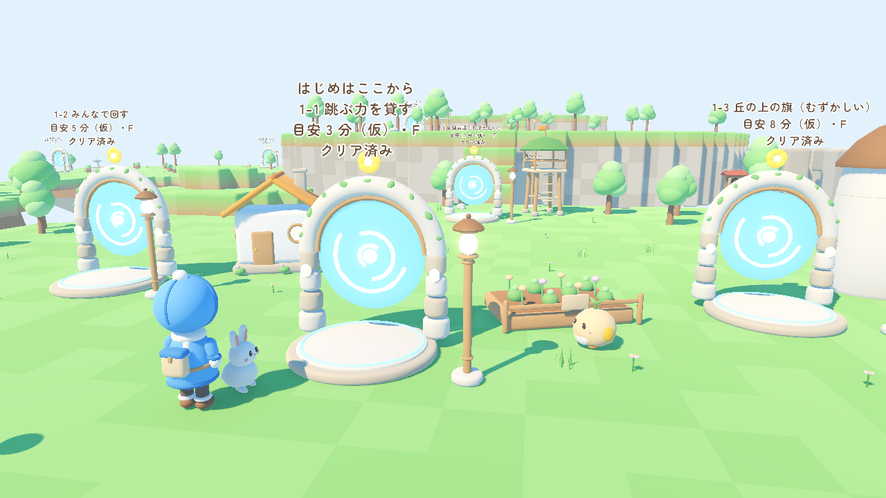
| 氏名/チーム名/法人名 | 【記入】 |
|---|---|
| タイトル（仮でも可） | （タイトル未定）【未決】 作業名 rule-relay (working title)。候補は docs/title/（本人はまだ選んでいない） |
| ジャンル | 3D 箱庭探索パズル（協力プレイ対応） |
| ターゲット | 協力パズル・物理の試行錯誤が好きな人。友人と通話しながら遊ぶ PC プレイヤー。ひとりでじっくり解きたい人も案 ソロで全ステージを遊べることは確定。年齢層の言い方は【未決】 |
| プラットフォーム | PC（Windows・Mac） Windows x86_64 と macOS（Intel・Apple シリコン）。CI で両方の起動を確かめている |
| 一言コンセプト | ルールは厳格に。解法は自由に。 |
| 現在の完成度（/100） | 【未決】 仕組み・協力・広場・57 ステージ・通しプレイの自動テストは実装済み。タイトル・物語・目安時間の実測・他者の試遊・Windows 11 実機の確認はまだ |
| SNS アカウント | 【記入】 |
| プレイスタイル | 1 人、または 1〜4 人のオンライン協力（専用サーバーなし） |
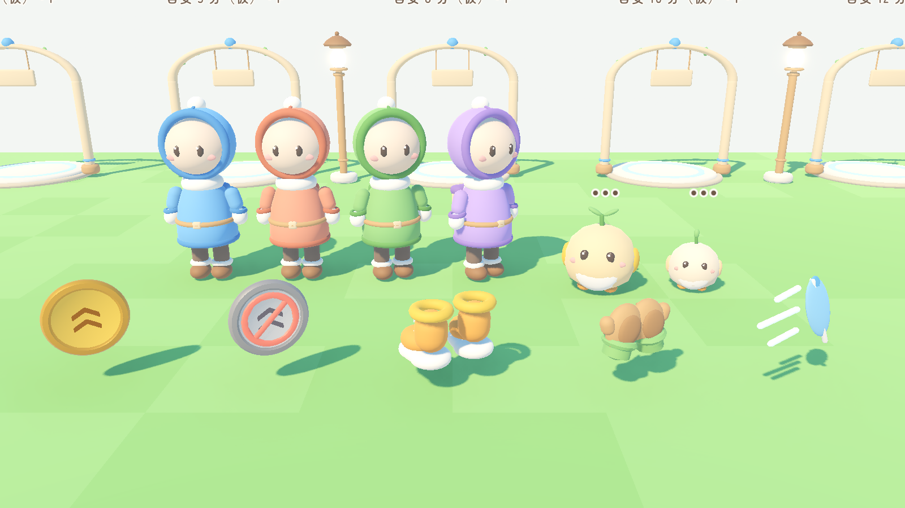
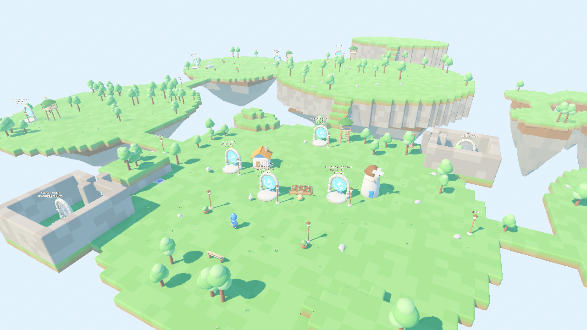
前へ進む力・跳ぶ力・投げる力が、1 つずつメダルになっている。
ブロックにジャンプを貸せばブロックが跳ぶ。貸しているあいだ、自分は跳べない。
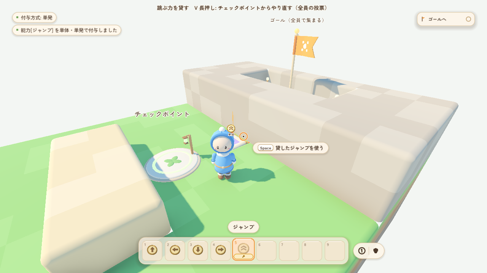
貸せば世界が動き、自分は動けなくなる。「誰が・いつ・何を手放すか」が協力の会話になる。
メダルは世界に 1 つずつ。複製も消滅もしない。禁止は必ず優先。
クリアは結果だけを見る。開けた島に道が何通りもあり、ルールに合えば想定外の解き方も歓迎。
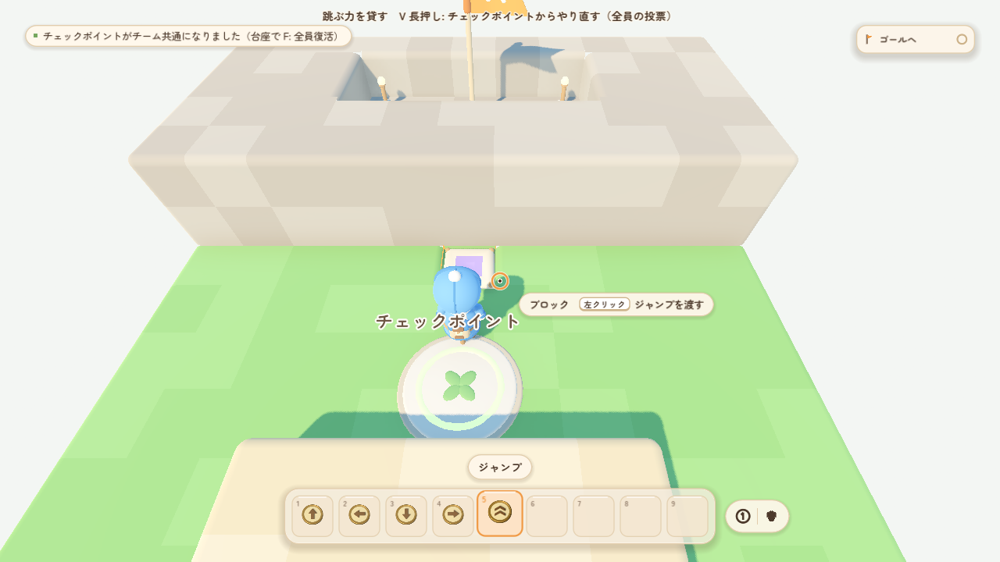
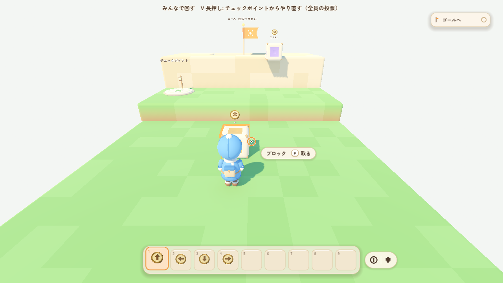
地形のセルを含むどのブロックにも、動物にも、仲間にも（承認なし）。
単発 キーで 1 回。使ったら貸した人へ自動で戻る
繰り返し 一定の間隔で動き続ける。F で回収
信号 鐘の音が届くあいだだけ動く。F で回収
同じ能力を n 個でジャンプは高さ n 倍、W は速さ n 倍、投げるは射程 n 倍。上限なし（本人 2026-11-20）。
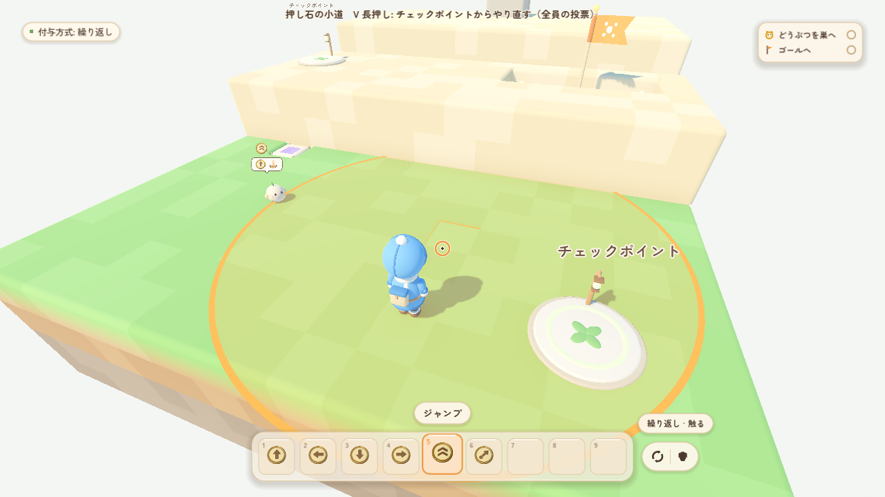
半径 5 ブロック（仮）の円の中の全ブロックへ、1 つのメダルで一度に貸す。範囲で渡したブロックは一緒に動く。
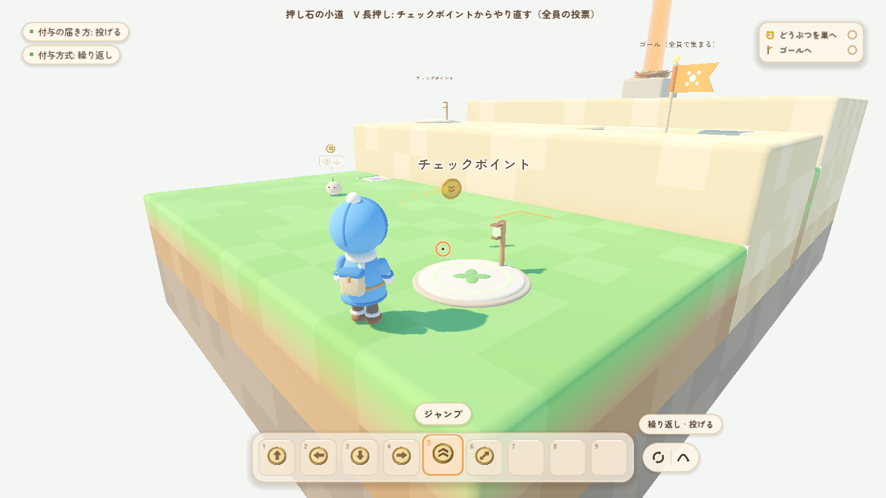
メダルが弧を描いて飛び、当たった物に能力が付く。谷の向こうのブロック・動物・仲間へ届く。外れたら手元へ戻る。
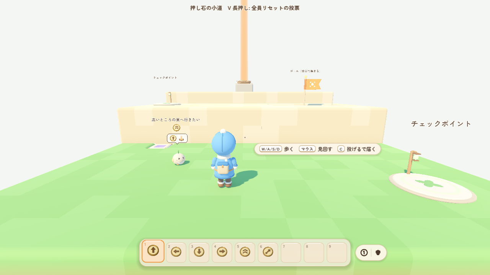
「高いところの巣へ行きたい」「鐘を鳴らしたい」。巣には遠くから見える光の柱。
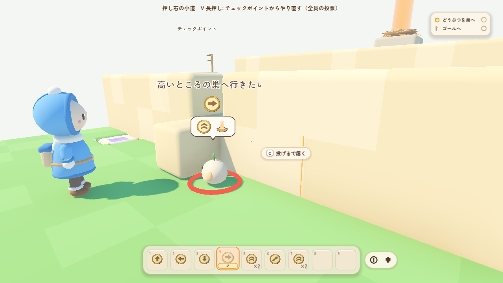
今の能力で行けるところまで近づき、吹き出しの中のメダルで「これが欲しい」。
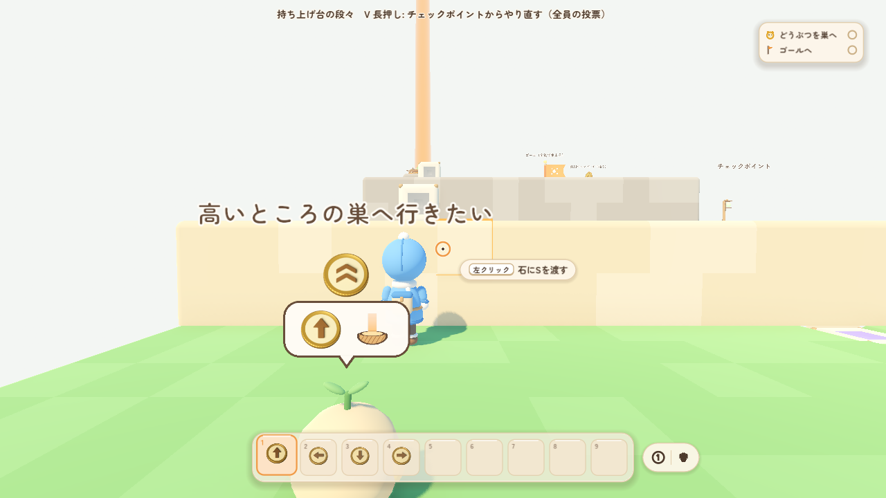
石を押して段にする、ジャンプを渡す。禁止は願いより優先。
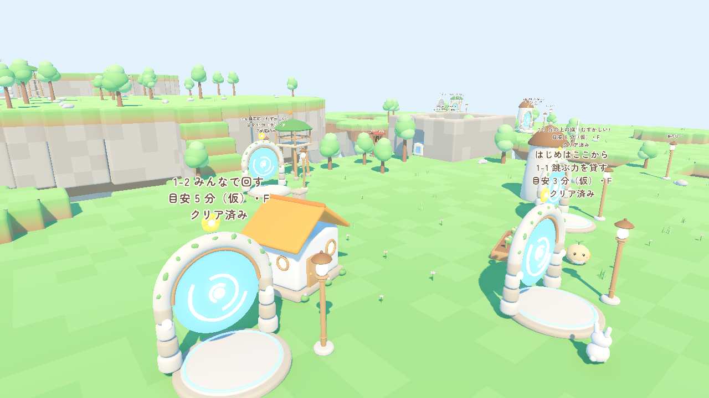
願いを叶えた動物が門のそばに住み、建物が建つ。「閉じ込められた動物を救う」話にはしない。
「ジャンプ禁止」の札も、能力と同じように貸し借りできる。禁止は能力より必ず強い。
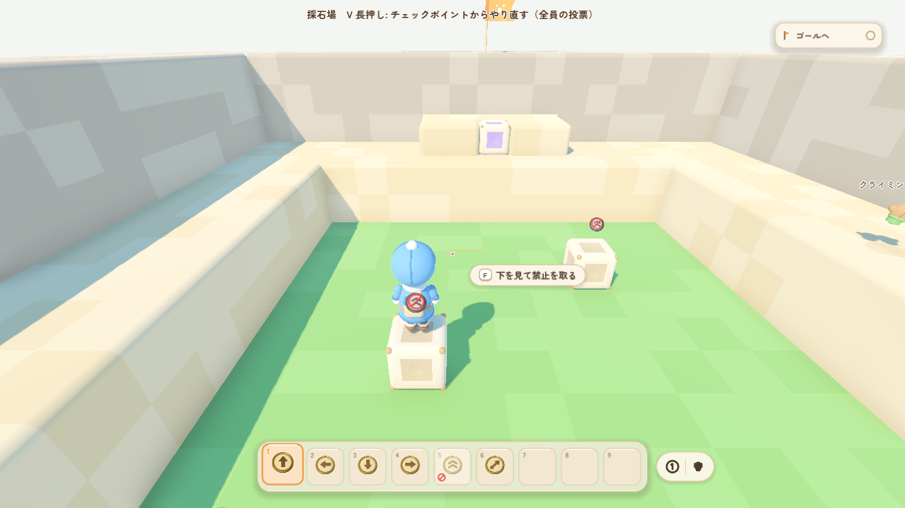
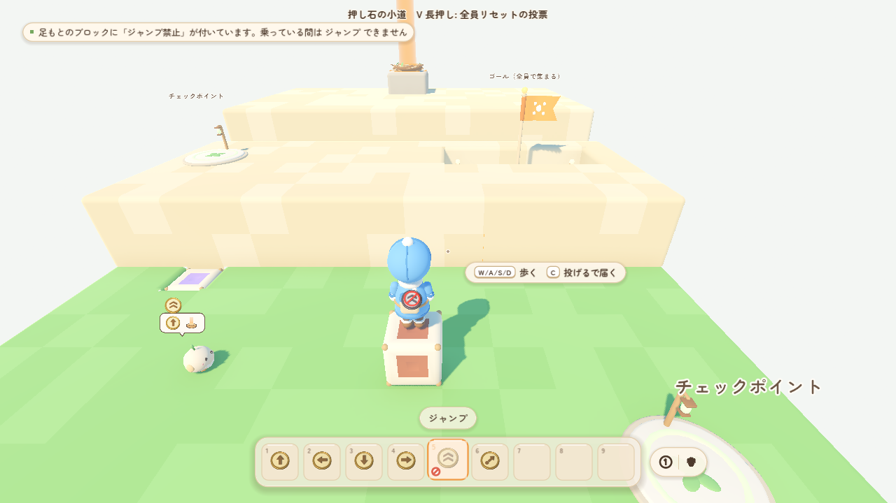
禁止中は、貸した単発も起動できない（本人 2026-11-19）。
禁止の付いたブロックの上では、乗った人も動物も禁止される。外から押されて動くことは妨げない。
F で取ると自分が禁止される。もう一方の石や地面へ渡して手放す。それが選択になる。
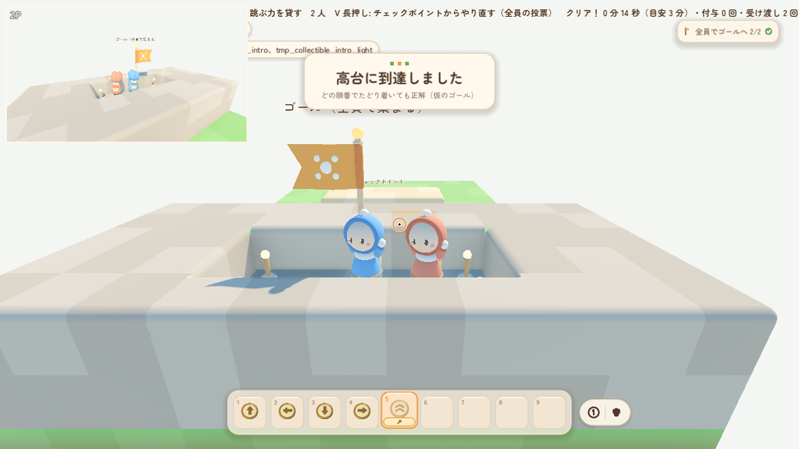
ひとりなら装備や回り道で。協力なら能力を集める近道で。
落ちたら観戦。仲間が台座で全員復活。過半数の投票でチェックポイントへ戻す。
島の条件に加えて、生きている全員がゴールに入るとクリア。集めた力を誰かが返す・回す手間が残る。
「ゴールの中からは渡せない」のような規則は足さない。窪みの地形で狙いにくくするだけ。
本人（2026-11-20）「システム的に妨害するとかは絶対にしたくない。自由な発想を妨げるから」
途中で入った人は観戦で待ち、次のやり直しで合流。ホストが落ちても新しいホストを選んで続ける。
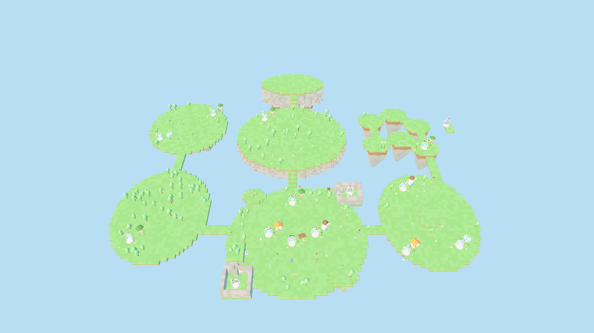
クリアで橋が架かる・岩がどく・階段がせり上がる。通せんぼのルールは足さない。広場でも能力が使え、秘密の庭・小島が寄り道のワールドの入口。
ゆるふわで温かみのある 3D ブロックの箱庭。明るい昼、丸くてかわいい生き物、やさしく暴力のない世界。物語は脇役（本人 2026-11-21）。
配置は docs/campaign-plan.md の地図を簡略化。題・順番はすべて仮
| ワールド | ステージ | 主に教える・使う仕組み |
|---|---|---|
| W1 はじまりの草原 | ジャンプを貸す・F で取る・繰り返し・ブロックの W/A/S/D・動物・地面と範囲・投げる・装備・禁止 【要確認】 | |
| W2 鐘の谷 | 発射台と鐘・信号の方式（こだまの鐘）・時の鐘 | |
| W3 ふわふわ浮島 | ダッシュ・往復足場・風・谷越しに投げ渡す | |
| W4 けものの森 | 動物を導く・重さの板と「重い」・群れ | |
| W5 札の庭 | 禁止の札を手放す・範囲で渡す・氷 | |
| W6 霧の峰 | ワープの石・浮く・泳ぐ・水の流れ | |
| W7 空の頂 | これまでの組み合わせ。最後は「頂の祭り」 | |
| O1〜O3 寄り道 | スイッチと扉・空中の移動・札の門。進行に不要で、全部むずかしい |
すべてコードにあり、広場の門から入れる（StageCatalog.all_stages()）
● ふつう ★ むずかしい
各ワールドの 3 番目と最後が★（本人 2026-11-21「マリオのように」）
最終的なステージ数 【未決】
目安の時間は根拠のない仮の値。本人の試遊で測って直す
【要確認】 W1 の教え方は v0.3.1 で直した直後（下の 10 ページ）。PDF にする日に campaign-plan と照らし直す。2-1 の「禁止の初出」は campaign-plan に残るが、v0.3.1 では 1-6 で禁止を教える
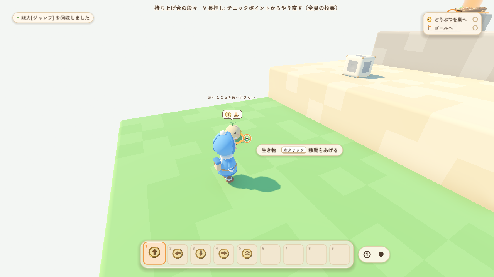
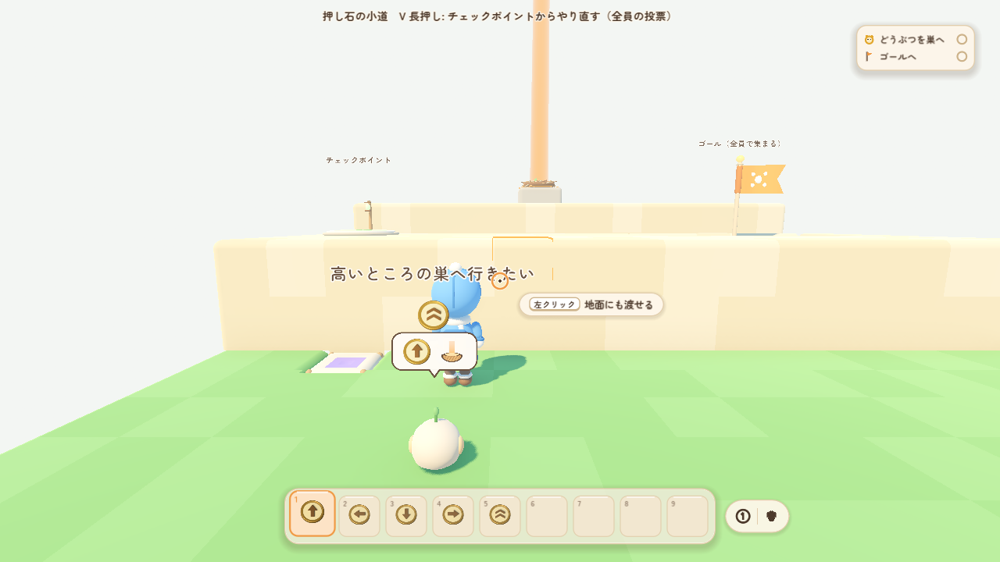
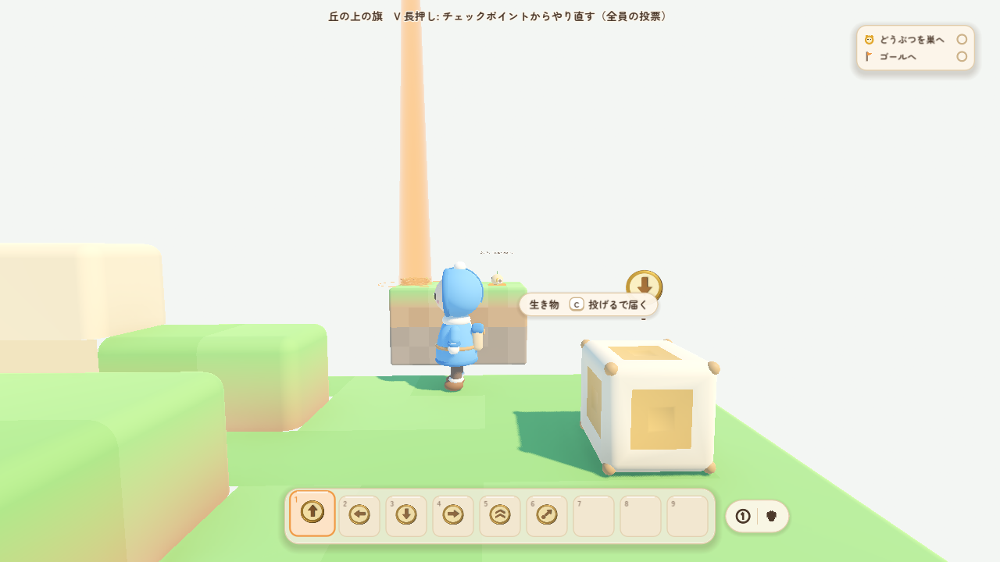
キーの絵と数文字。必要なときだけ短く出て、同じ操作を 3 回すると消える。
F で取った・拾った能力は空いていればホットバーへ入り、自動で選ばれる。
広場では次に遊ぶ門に「はじめはここから」「つぎはここ」。
人の試遊はまだ。並び・数値（幅 14・柱の距離など）は仮 【要確認】 本人の試遊のあとで見直す
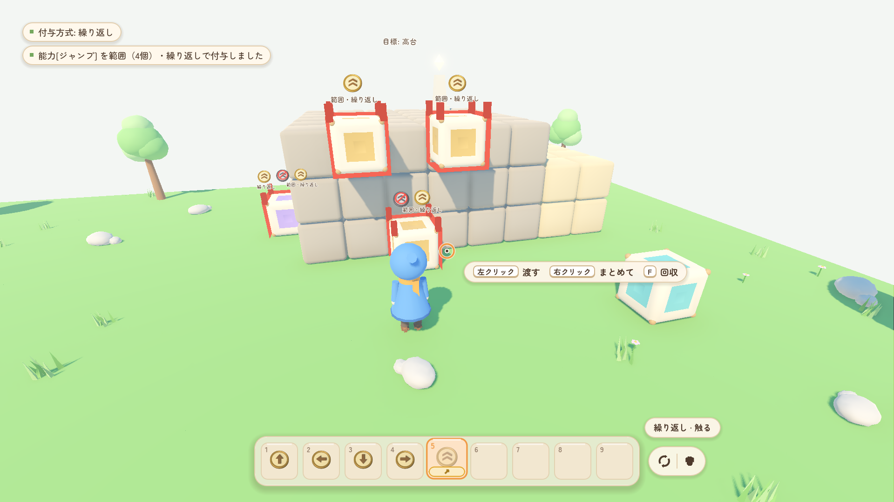
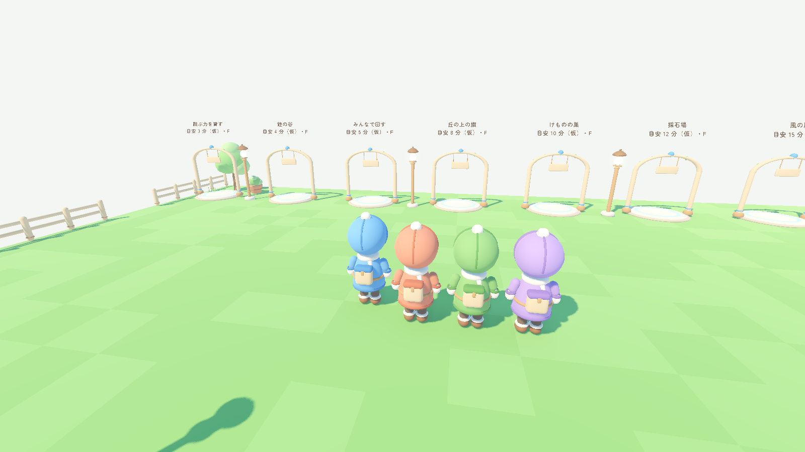
文字はこげ茶、地は生成り。線は 2px にそろえる
やわらかい丸ゴシック。子ども向けに寄りすぎず、小さい字でも読める（SIL OFL 1.1）。
Blender の Python スクリプトで生成した自作のモデル 50 点とアイコン。画像生成 AI・3D 生成 AI は使っていない。
効果音 32 個と BGM 3 曲（タイトル・広場・島）。Stable Audio 3 medium で本人の Mac の中で生成（13 ページ）。BGM は仮の選曲。
本人の試聴 【記入】
提出版はソロと Steam なしの直接接続（ENet、UDP 24565）。ホストが落ちたら全員が同じ情報から次のホストを選んで続ける。
能力・器・禁止・発動方式・範囲は物理と入力から切り離した純粋なクラス（src/rules/）。単体テストで確かめられる。
件の自動テストが成功（失敗 0）
2026-11-24、main 7a50463（v0.3.1）で tools/check.sh を実行
全ステージを、プレイヤーと同じ操作（歩く・跳ぶ・渡す・拾う。瞬間移動なし）で最初から最後まで遊んでクリアできることを毎回確かめる。協力の近道も。
同じ PC の中で 2〜4 人をつなぎ、受け渡し・回収・観戦・投票・途中参加・ホスト移譲・4 人の同時操作でメダルが増減しないことを確かめる。
整形・静的検査・全テスト・起動確認・Windows / macOS / Linux の書き出し。Windows と macOS のランナーで実行ファイルを起動。提出版に Steam・秘密・原本が入っていないことも確かめる。
まだ: 他者の試遊、Windows 11 実機、別々の PC・インターネット越しの協力。スペック想定は未測定 【未決】
| AI ツール | モデル・バージョン | 使用工程と用途 | 使用時期 | 人の確認 |
|---|---|---|---|---|
| Claude Code Anthropic |
【記入】 提出時にサービスの表示で確かめる |
プログラムの生成（ルール・物理・通信・UI）、テスト・CI、技術選定の比較、3D モデルとアイコンを作る Blender のスクリプト、効果音の合成と取り込みのスクリプト、効果音の候補の測定と選定、記録・文書の作成 | 2026-11-18〜【記入】 終わりの日 |
本人が PR でレビュー |
| Stable Audio 3 medium Stability AI。Audio Studio MCP 1.2.0 で本人の Mac の中で生成（外部に送っていない） |
Hugging Face stabilityai/stable-audio-3-optimized の MLX 版、リビジョン 30cb264 | 音楽の作曲・効果音の生成。候補を 4 回生成し、効果音 32 個（ゲームの効果音すべて）と BGM 3 曲を採用。効果音の加工は人の書いたスクリプトでのフィルター・切り出し・ピッチ・音量だけ。BGM は加工なし | 2026-11-20〜21 | 効果音は AI が測定値で選んだ（足音 4 つは本人が指定）。BGM は仮の選曲。本人の試聴 【記入】 |
| ChatGPT OpenAI |
【記入】 | 企画の相談（仕様は本人が選択） | 2026-11-17 | 本人が仕様を選択 |
画像生成 AI・3D 生成 AI（モデルとアイコンはスクリプトで生成）。ゲームの中で動く AI もない。この企画書の図も HTML と SVG で描いた。
生成音声のモデルは Stability AI Community License。特定の個人の声・作家の作風を真似る指示は出していない 【記入】 本人の最終確認
2026-11-22 時点の公式の AI 利用ガイドラインは「策定中」。確定版（2026-12-15 以降）で読み直す 【要確認】
rule-relay.exe（データ埋め込みの 1 ファイル）・LICENSES.txt・README_Windows.txt
Mac のアプリ（.app、Intel・Apple シリコン両対応）・LICENSES.txt
インストールは不要。Steam・追加のランタイム・アカウント登録も不要。
提出する Mac 版を署名・公証済みにするか 【未決】
タイトルで「ひとりで遊ぶ」→ 広場の正面の光の柱が立つ門の前で F。
タイトルの「友だちと遊ぶ」→ ホストは「部屋を作る」。参加者はホストの IP アドレスを入れて「部屋に入る」（ポート 24565）。インターネット越しはホスト側で UDP 24565 のポート開放が要る。1 台で試すなら 2 つ起動し、2 つ目は記録の名前を変えて 127.0.0.1 に入る。
審査員向けに 1 台で 2 つ起動する手順を載せるか 【未決】 試遊版は全ステージが開いている。提出版の開き方 【未決】
Windows 11 実機・Mac 実機で展開から 1 ステージクリアまでの確認 【要確認】
| 操作 | キーボード・マウス | ゲームパッド |
|---|---|---|
| 移動（カメラから見た向き） | WASD | 左スティック |
| カメラ | マウス | 右スティック |
| ジャンプ | Space | A |
| ダッシュ | Shift | B |
| 取り戻す・拾う・鐘・台座・入口 | F | X |
| 触る ↔ 投げる | C | Y |
| 狙ったものに渡す | 左クリック | RT |
| 範囲でまとめて渡す | 右クリック | LT |
| ホットバーの枠 | 1〜9 | LB / RB |
| 発動方式の切り替え | Q・ホイール押し込み | 十字↑ |
| やり直しの投票（長押し） | V | 十字↓ |
| 持ち物 | E | View |
| メニュー | Esc | Start |
| 目的をもう一度出す | Tab | Start のメニュー |
Godot Engine 4.6.3（MIT）・Jolt Physics（MIT）・Godot 組み込みの部品（各ライセンス）・Zen Maru Gothic（SIL OFL 1.1）・Stable Audio 3 medium の生成音（Stability AI Community License）・自作のモデルとアイコン。外部のアドオン・CC0 素材は使っていない。全文は ZIP の LICENSES.txt。
〜2026-12 中旬 世界観・タイトル・アートスタイルを決める、他者の試遊
2026-12〜2027-01 見た目の作り込み、ステージ数と目安時間の実測
2027-02 Windows 実機で画面写真・動画を撮る
〜2027-03-15 提出
開発体制 【記入】（いまは個人開発＋AI ツール）
販売・収益モデル 【未決】 想定価格 【未決】 レーティング 【未決】
決まっていること: 報酬は見た目・記録・収集品だけで、能力を有利にする要素は売らない前提（ADR 0008）。戦闘・流血の表現・チャットはない
応募者 【記入】 SNS 【記入】